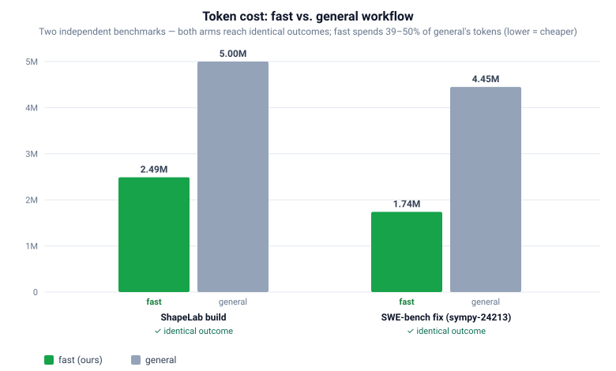

Portable workflow instructions for coding agents
HarnessFlow
A portable Markdown pack that routes templated requests through structured, multi-agent
workflows — planning, adversarial challenge, implementation, QA, and persistent repo memory —
for one shared general, fast, and skill pipeline.
general, fast, or skill family, is executed against shared
contracts and worker agents, and is persisted to repo_info/ memory that feeds the next request.
Overview
An instruction pack, not an application
Without a harness, a coding agent answers in a single ad-hoc pass: read some files, guess a plan, write
changes, and stop. HarnessFlow replaces that with a formalized pipeline. A request template names a
detailed workflow, which decomposes into parallel subagents with distinct cognitive perspectives,
challenged by an adversarial reviewer, validated by a QA pass, and recorded in persistent repo memory.
A bare, plain-language prompt is answered normally, without the pack.
It is pure Markdown plus two Bash setup scripts — copy it into any repo under
.github/HarnessFlow/ and it works with Claude Code, Codex, and VS Code Copilot.
Worked example
The refactor workflow, animated
The fast refactor pipeline in motion. A request flows left to right through seven steps;
step 3 fans out into parallel subagents, and step 6 loops to remediate before the change is documented.
Architecture
How a request moves through the pack
The pack is source-controlled at this repo root, then installed into target repos under
.github/HarnessFlow/. Tool-specific entry points load shared rules and hand off to the
workflow family the request template names.
repo_info/.Workflow families
Three modes, one shared pipeline
Three platform-adaptive families — general, fast, and skill — each
carry nine workflow files: code, correctness check, debug, exec, initialize, loop, PR, query, and refactor.
General
workflow/general_workflow/ — the thorough multi-agent pipeline shared by all three tools (mode: general).
Fast · token-lean
workflow/token_effective_workflow/ — the streamlined, main-agent-centric set selected with mode: fast.
Skill · community
workflow/skill_workflow/ — a clone of the fast family whose key steps are backed by popular community skills (each ≥1000 GitHub stars), with inline fallbacks (mode: skill).
| Task | General (mode: general) |
Fast (mode: fast) |
Skill (mode: skill) |
|---|---|---|---|
| Initialize | general_workflow/initialize.instructions.md | token_effective_workflow/initialize.instructions.md | skill_workflow/initialize.instructions.md |
| Implement | general_workflow/code.instructions.md | token_effective_workflow/code.instructions.md | skill_workflow/code.instructions.md |
| Debug | general_workflow/debug.instructions.md | token_effective_workflow/debug.instructions.md | skill_workflow/debug.instructions.md |
| Question | general_workflow/query.instructions.md | token_effective_workflow/query.instructions.md | skill_workflow/query.instructions.md |
| Correctness | general_workflow/correctness_check.instructions.md | token_effective_workflow/correctness_check.instructions.md | skill_workflow/correctness_check.instructions.md |
| Refactor | general_workflow/refactor.instructions.md | token_effective_workflow/refactor.instructions.md | skill_workflow/refactor.instructions.md |
| Exec | general_workflow/exec.instructions.md | token_effective_workflow/exec.instructions.md | skill_workflow/exec.instructions.md |
| PR breakdown | general_workflow/pr.instructions.md | token_effective_workflow/pr.instructions.md | skill_workflow/pr.instructions.md |
| Loop | general_workflow/loop.instructions.md | token_effective_workflow/loop.instructions.md | skill_workflow/loop.instructions.md |
Results
Same outcome, roughly half the tokens
The fast workflow is the efficiency–quality sweet spot. Across two independent benchmarks — a
1,000-line greenfield OpenCV + scikit-learn build and a real
SWE-bench bug fix
(sympy__sympy-24213) — it reaches the same successful outcome as the heavyweight
general workflow while spending 39–50% of the tokens, and ships the leanest fully-documented code.

fast uses 2.49M tokens
vs. general's 5.00M; on the SWE-bench fix, 1.74M vs. 4.45M — identical outcomes either way.
Installed layout
Where the pack lives
Copy this repo into a target repo at .github/HarnessFlow/. The setup scripts then generate
root-level CLI entry points and standard Copilot instructions.
<target-repo>/
|-- .github/
| |-- copilot-instructions.md
| `-- HarnessFlow/
| |-- AGENTS.md
| |-- CLAUDE.md
| |-- copilot-instructions.md
| |-- setup.sh
| |-- cli_setup.sh
| |-- sync_agent_definitions.py
| |-- _lib/
| |-- philosophy/
| |-- workflow/
| |-- agents/
| |-- request_template/
| |-- skills/
| `-- repo_info/
|-- AGENTS.md
|-- CLAUDE.md
|-- .claude/
| |-- rules/
| `-- agents/
`-- .codex/
`-- agents/copilot-instructions.mdVS Code Copilot router template.CLAUDE.mdClaude Code CLI router template.AGENTS.mdCodex router template for CLI and VS Code._lib/Workflow contract, safety rules, approval gate.philosophy/Shared execution guidance for agents and subagents.workflow/Thegeneral,fast, andskillinstruction families.agents/Source worker-agent definitions — the single source of truth for every role..claude/agents/·.codex/agents/Native worker definitions generated fromagents/bysync_agent_definitions.py. Do not hand-edit.
Setup
Two commands
Run from the target repo root after the pack has been copied to .github/HarnessFlow/.
# VS Code + Copilot
bash .github/HarnessFlow/setup.sh# Claude Code CLI, Codex CLI, or Codex in VS Code
bash .github/HarnessFlow/cli_setup.shVS Code settings
Adds instruction and agent discovery locations to .vscode/settings.json.
Copilot router
Creates or refreshes .github/copilot-instructions.md when pack-generated.
CLI routers
Creates or refreshes root CLAUDE.md and AGENTS.md when pack-generated.
Repo memory
Ensures the canonical repo_info/ files exist in the installed pack.
python3 harness_gui.py to launch it in your browser.
Agents & skills
Worker agents and reusable skills
agents/ defines 16 worker agents, orchestrated by the per-category workflow files under
workflow/<family>/. Skills provide reusable specialized procedures.
Each role is projected by sync_agent_definitions.py into the two native formats —
.claude/agents/<slug>.md and .codex/agents/<slug>.toml — which
cli_setup.sh installs. Spawning by agent type makes the role text the subagent's
system prompt, so it costs nothing per spawn instead of being re-sent or read in-band, and it
enforces that role's tools and sandbox. Re-run the sync after editing any agents/*.agent.md.
Worker agents
Focus, Broad, and Free Analyst; Senior and Principal Engineer; Devils Advocate; Diversifier; Online Researcher; Implementer; Executor; QA Engineer; Bug Reproducer; and the refactor specialists (Architecture, Redundancy, Robustness, Complexity).
Orchestration
There are no separate coordinator agents — each *.instructions.md file fans out the analysts, synthesizes one plan, runs the challenge pass, then validates with QA.
breakdown-pr
skills/breakdown-pr/SKILL.md decomposes large branches into stacked, reviewable PRs.
claude-native-skills
skills/claude-native-skills-subagents/SKILL.md runs Claude Code-only post-implementation checks — the simplify: true / code_review: true path.
local review skills
skills/code-simplification/ and skills/code-review-and-quality/ back simplify: local / code_review: local — the platform-independent alternative to the native skills. Resolution lives in _lib/review_skills.md.
community registry
skills/skill_workflow_skills.md powers mode: skill — writing-plans, the-fool, deep-research, code-reviewer, and more, each with an inline fallback.
Repo memory
Persistent cross-session memory
Workflows use repo_info/ as persistent memory. This source repo ignores that folder, but target
repos should initialize and maintain it for their own codebase. In multi-layer repos, workflows also read each
sub-repo's or adjacent repo's codebase_overview.md and scripts_overview.md as labeled
cross-layer context.
Overview
codebase_overview.md and scripts_overview.md.
History
update_logs.md and update_logs_auto_generated.md.
Known issues
known_issues.md and known_issues_auto_generated.md.
Question records
past_Q&A.md and past_Correctness_Check.md.
Get started
Install in three steps
# 1 — clone the pack
git clone https://github.com/HangYu8123/HarnessFlow.git
# 2 — copy it into your repo
mkdir -p your-repo/.github/HarnessFlow
cp -r HarnessFlow/* your-repo/.github/HarnessFlow/
# 3 — generate entry points (pick your tool)
cd your-repo
bash .github/HarnessFlow/cli_setup.sh # Claude Code / Codex
bash .github/HarnessFlow/setup.sh # VS Code + Copilot
Then paste the filled-in initialize request template, and keep sending templates — add
mode: fast or mode: skill to switch pipelines.